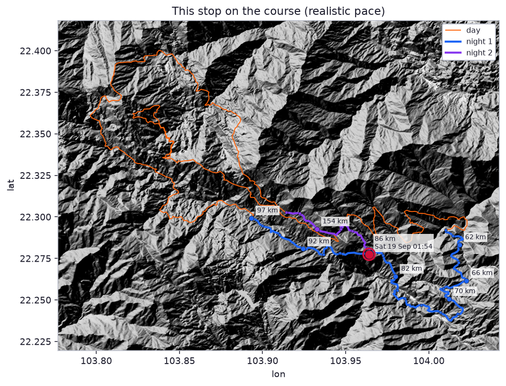
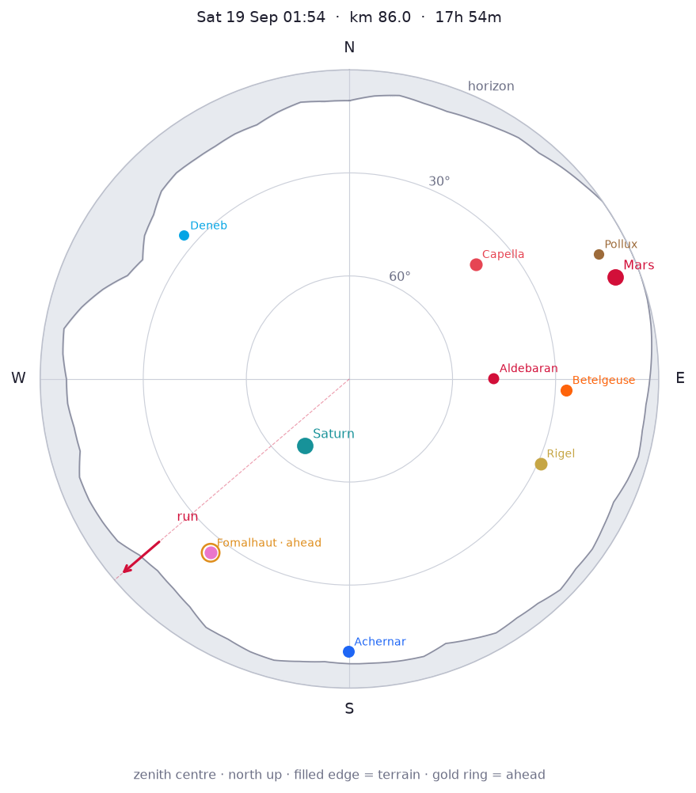
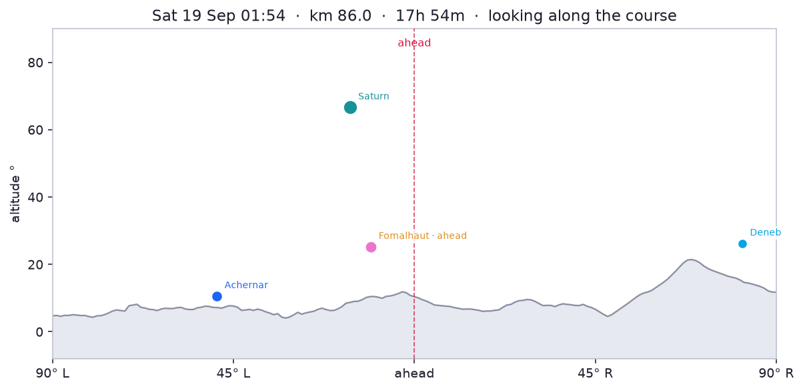

Moon first quarter, 49% lit, below the terrain horizon. Milky Way centre is below the local horizon. Overhead: Andromeda, Aries, Cetus, Pegasus, Perseus, Pisces.



Planets
Constellations
- Overhead: Andromeda, Aries, Cetus, Pegasus, Perseus, Pisces
- Up: Auriga, Cassiopeia, Cepheus, Cygnus, Orion, Piscis Austrinus, Taurus
- Rising: Columba, Gemini, Lepus, Ursa Minor
- Setting: Aquarius, Capricornus, Eridanus, Phoenix
Bright stars
- Capella (Auriga): 40° NE (48°), mag 0.1
- Rigel (Orion): 29° SE (114°), mag 0.1
- Betelgeuse (Orion): 27° E (93°), mag 0.4
- Achernar (Eridanus): 11° S (180°), mag 0.5
- Aldebaran (Taurus): 48° E (90°), mag 0.8
- Pollux (Gemini): 9° NE (63°), mag 1.1
- Fomalhaut (Piscis Austrinus): 25° SW (219°), mag 1.2
- Deneb (Cygnus): 26° NW (311°), mag 1.2
- Polaris (Ursa Minor): 23° N (0°), mag 2.0
Other stops this night
- km 62 · Fri 18 Sep 20:01
- km 66 · Fri 18 Sep 21:06
- km 70 · Fri 18 Sep 22:00
- km 82 · Sat 19 Sep 00:44
- km 92 · Sat 19 Sep 03:20
- km 97 · Sat 19 Sep 04:37
Same sky, different place: Night 2 · best stop km 154.
References
- Achernar · Grokipedia · Wikipedia
- Aldebaran · Grokipedia · Wikipedia
- Andromeda · Grokipedia · Wikipedia
- Aquarius · Grokipedia · Wikipedia
- Aries · Grokipedia · Wikipedia
- Auriga · Grokipedia · Wikipedia
- Betelgeuse · Grokipedia · Wikipedia
- Capella · Grokipedia · Wikipedia
- Capricornus · Grokipedia · Wikipedia
- Cassiopeia · Grokipedia · Wikipedia
- Cepheus · Grokipedia · Wikipedia
- Cetus · Wikipedia
- Columba · Grokipedia · Wikipedia
- Cygnus · Grokipedia · Wikipedia
- Deneb · Grokipedia · Wikipedia
- Eridanus · Grokipedia · Wikipedia
- Fomalhaut · Grokipedia · Wikipedia
- Gemini · Grokipedia · Wikipedia
- Lepus · Grokipedia · Wikipedia
- Mars · Grokipedia · Wikipedia
- Milky Way centre · Grokipedia · Wikipedia
- Moon · Grokipedia · Wikipedia
- Orion · Grokipedia · Wikipedia
- Pegasus · Grokipedia · Wikipedia
- Perseus · Grokipedia · Wikipedia
- Phoenix · Grokipedia · Wikipedia
- Pisces · Grokipedia · Wikipedia
- Piscis Austrinus · Grokipedia · Wikipedia
- Polaris · Grokipedia · Wikipedia
- Pollux · Grokipedia · Wikipedia
- Rigel · Grokipedia · Wikipedia
- Saturn · Grokipedia · Wikipedia
- Taurus · Grokipedia · Wikipedia
- Ursa Minor · Grokipedia · Wikipedia